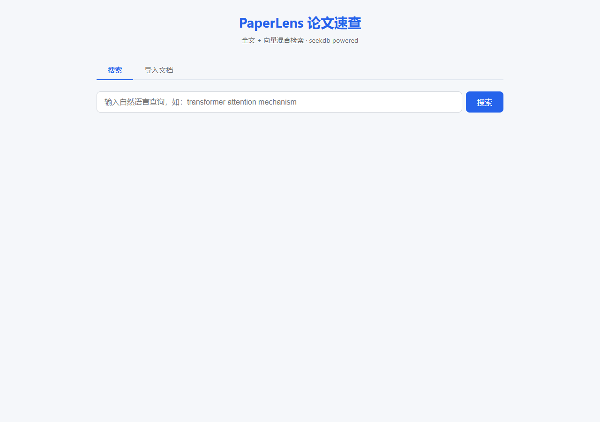
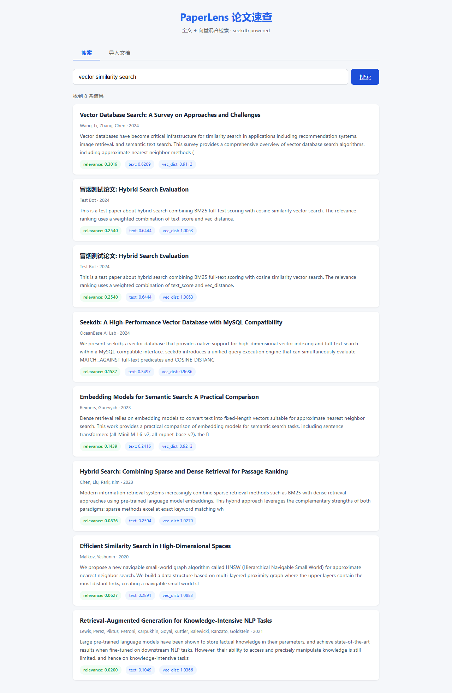

解决的问题
整理文献时，关键词搜不到语义相近的表述，语义检索又会漏掉精确术语。PaperLens 把两种召回放进同一条 SQL：
全文得分（MATCH ... AGAINST）与向量距离（COSINE_DISTANCE）加权成一个 relevance，
在 seekdb 内完成排序，返回结果同时给出三个分数，便于判断命中原因。
全文 + 向量混合检索
一条 SQL 同时计算 text_score、vec_distance 与 combined relevance，数据库侧排序。
导入即可检索
支持批量导入论文标题、作者、摘要，写入后立即可被混合检索命中。
分数可解释
每条结果展示 relevance / text / vec_dist，方便调权重与排查召回。
真实运行截图


核心实现
SELECT id, title, authors, abstract,
MATCH(title, abstract) AGAINST (?) AS text_score,
COSINE_DISTANCE(embedding, ?) AS vec_distance,
0.4 * MATCH(title, abstract) AGAINST (?)
+ 0.6 * (1 - COSINE_DISTANCE(embedding, ?)) AS relevance
FROM documents
ORDER BY relevance DESC
LIMIT ?;数据库
seekdb（MySQL 协议，向量 + 全文索引）
后端
Node.js 20 + Express
接入方式
seekdb-js 1.3.0，
client.execute() 直接执行混合 SQL索引
FULLTEXT(title, abstract) WITH PARSER ik + VECTOR(384) 余弦距离
验证
10 篇样例数据，冒烟测试 4/4 通过，Top-1 relevance 0.4951
本地运行
docker run -d --name seekdb -p 10000:10000 oceanbase/seekdb:latest -p 10000
cd paperlens
npm install
npm run init-db
npm run seed
npm start # http://localhost:3789
npm run smoke-test代码与证据
完整源码、样例数据、冒烟测试与运行说明都在仓库中：
查看代码仓库